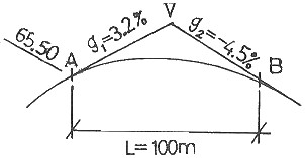
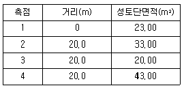
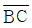
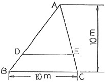
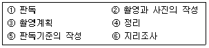
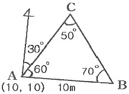
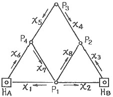
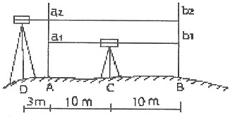
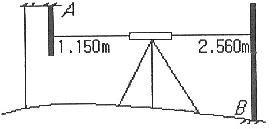

측량및지형공간정보기사 (2010-05-09 기출문제)
1과목: 측지학 및 위성측위시스템
1. UTM 좌표에 대한 설명을 옳지 않은 것은?
- UTM 좌표는 적도를 횡축으로, 측지선을 종축으로 한다.
- UTM 좌표에서 종좌표는 N으로, 횡좌표는 E를 붙인다.
- 80° N과 80° S간 전지역의 지도는 UTM 좌표로 표시할 수 있다.
- UTM 좌표는 세계 제2차 대전말기 연합군의 군용거리 좌표로 고안된 것이다.
(정답률: 57%)

2. 지구자기장의 생성 원인과 관련이 없는 것은?
- 지구의 자화
- 자이로 마그네틱 효과에 의한 설명
- 외부의 자전전류
- 내부의 자전전류
(정답률: 75%)
3. 지자기관측에 대한 내용 중 틀린 것은?
- 지자기방향이 자오선과 이루는 각을 편각이라 한다.
- 자자기방향이 수평면과 이루는 각을 복각이라 한다.
- 자자기 강도의 연직방향성분을 연직분력이라 한다.
- 북을 향하여 아래쪽으로 기우는 복각을 (-)로 표시한다.
(정답률: 60%)
4. GNSS(Globa Navigational Satellitr System) 위성과 관련이 없는 것은?
- GPS
- KH-11
- GLONASS
- Galileo
(정답률: 90%)
5. 중력이상(重力異常)에 대한 설명으로 옳지 않은 것은?
- 중력이상은 기준면에서의 관측 중력값에서 표준중력값을 뺀 값이다.
- 프리에어(free air)이상은 고도가 높은 측점일수록 음(-)으로 감소한다.
- 부게(bouguer)이상은 중력관측점과 지오이드면 사이의 질량을 고려한 중력이상이다.
- 부게(bouguer)이상은 고도가 높을수록 음(-)으로 감소한다.
(정답률: 66%)
6. GPS를 이용한 위치결정에 사용되지 않는 것은?
- 후방교회법
- 최소제곱법
- 차분법
- 구면조화함수
(정답률: 80%)
7. 지구의 형상에 대한 설명으로 옳지 않은 것은?
- 지오이드는 지구의 평균해면에 근사하는 등포텐셜면이다.
- 지오이드의 형상은 지구타원체와 일치하지 않는다.
- 지오이드는 파랑, 해류 등의 영향으로 수시로 변화한다.
- 지오이드와 지구 타원체와의 표고차를 “지오이드고”라 한다.
(정답률: 79%)
8. 지구를 반경이 637km인 구(球)라고 가정했을 때 위도 30°, 경도 60°, 높이(h) 0m인 지점의 자심직각좌표계에서의 좌표값 중 z좌표는 얼마인가? (단, 지구의 회전축을 X-축으로 한다.)
- 3185km
- 4185km
- 5517km
- 6370km
(정답률: 55%)
9. 다음 용어에 대한 설명으로 틀린 것은?
- 지구의 자전축을 지축이라 한다.
- 자오선은 적도와 직교하며 무수히 많다.
- 지구중심을 포함하는 임의의 평면과 지표면의 교선을 대원이라 한다.
- 평행권은 적도에 직교하는 평면과 지표면의 교선을 말한다.
(정답률: 45%)
10. 평면측량에서 1/50000까지 거리의 허용오차를 둔다면 지구를 평면으로 볼 수 있는 한계는 약 얼마인가? (단, 지구의 반경은 637km로 한다.)
- 31km
- 65km
- 98km
- 123km
(정답률: 87%)
11. 준성(quasar)으로 발생되는 전파를 이용하여 수평위치를 결정하는 측량 방법은?
- GPS(Global Positioning System)
- SLR(Satellite Laser Ranging)
- VLBI(Very Long Baseline Interferometry)
- LLR(Lunar Laser Ranging)
(정답률: 76%)
12. GPS에 관한 설명으로 옳지 않은 것은?
- 3차원 측량을 동시에 할 수 있다.
- 두 개의 주파수를 사용하여 신호를 전송한다.
- 지구를 크게 3개의 지역으로 분할한 지역 기준계를 사용한다.
- 약 0.5 항성일의 궤도 주기를 가지고 있다.
(정답률: 89%)
13. 위성의 기하학적 배치 상태에 따른 정밀도 저하율을 뜻하는 것은?
- 멀티패스(Multipath)
- DOP
- 싸이클 슬립(Cycle Slip)
- S/A
(정답률: 84%)
14. GPS를 이용한 기준점측량의 계획을 수립하려고 한다. 이 때 위성의 이용 가능 시간대와 배치 상황도를 참고하여 관측계획을 수립할 때 고려하지 않아도 되는 것은?
- 상공 시계 확보를 위한 선점 위치의 지상 장애물 분포 상황
- 임계 고도각 이상에 존재하는 사용 위성의 개수
- 수신에 사용할 각 위성의 번호
- 관측 예정 시간대의 DOP 수치 파악
(정답률: 82%)
15. DGPS에 대한 설명으로 옳지 않은 것은?
- 일반적으로 DGPS가 단독측위보다 정확하다.
- DGPS에서는 2개의 수신기에 관측된 자료를 사용한다.
- DGPS에서는 2개의 수신기의 위치를 동시에 계산한다.
- 기선의 길이가 길수록 DGPS의 정확도는 낮다.
(정답률: 72%)
16. 다음 중 3차원 좌표가 아닌 것은?
- 원주좌표
- 원좌표
- 구면좌표
- 3차원 직교좌표
(정답률: 72%)
17. GPS 측량에서 시간의 기준에 대한 설명 중 옳지 않은 것은?
- 2006년 10월 현재, 현정세계시(UTC)와 국제원자시(TAI)의 차는 3초 정도이다.
- MJD(Modified Julian Date) = Julian Date - 2400000.5 days 이다.
- 국제원자시(TAI)는 전 세계 세슘원자시계의 평균으로 설정된 것이다.
- GPS시(GPS time)는 국제원자시(TAI)와 19초 차이나 난다.
(정답률: 72%)
18. 기준점측량과 같이 매우 높은 정밀도를 필요로 할 때 사용하는 방법으로서 두 개 또는 그 이상의 수신기를 사용하여 보통 1시간 이상 관측하는 GPS 현장 관측 방법은 무엇인가?
- 정지측량(스태틱 관측방법)
- 이동측량(키네마틱 관측방법)
- 고속 스태틱 관측방법
- RTK(Real Time Kinematic)
(정답률: 95%)
19. 1등 삼각망을 구성하는데 있어 기준이 되는 지구의 형상은?
- 수준면이 연장된 평면
- 지오이드
- 준거(기준)타원체
- 기준 구
(정답률: 91%)
20. 축지학의 직접적 응용 분야에 해당되지 않는 것은?
- 지각 변동 결정
- 지구 중력장 결정
- 교통량 결정
- 지도 제작
(정답률: 79%)
2과목: 응용측량
21. 원곡선의 명칭 및 관련공식으로 옳지 않은 것은? (단, R은 곡선반지름, I는 교각이다.)
- 접선장(TL)=R×tan

- 중앙종거(M)=R×(1-cod
 )
) - 외할(E)=R×(sec
 -1)
-1) - 현장(C)=1R×cos

(정답률: 74%)
22. 1:25000 축척의 지형도에서 주곡선을 이용하여 구릉지를 구적기로 면적 측정하여 Ao=120m2, A1=450m2, A2=1270m2, A3=2430m2, A4=5670m2을 얻었을 때 등고선법(각주 공식)에 의한 체적은?
- 56166.67m3
- 66166.67m3
- 76166.67m3
- 86166.67m3
(정답률: 57%)
23. 하천공사에서 폭이 좁은(50m 이하) 하천의 평면도 작성에 두로 사용되는 축척은?
- 1:1000
- 1:2500
- 1:5000
- 1:10001:10000
(정답률: 58%)
24. 경관의 개성적 분류에 대한 설명으로 옳지 않은 것은?
- 산속의 기암절벽은 천연적 경관에 속한다.
- 넓은 초원이나 바다의 풍경은 파노라믹한 경관에 속한다.
- 수목으로 쌓인 호수나 들은 터널적 경관이다.
- 안개, 아침이나 저녁노을 등은 순간적 경관이다.
(정답률: 65%)
25. 유속측정을 위한 부자의 종류가 아닌 것은?
- 표면부자
- 원격부자
- 이중부자
- 봉부자
(정답률: 50%)
26. 일반적인 택지조성측량의 순서로 가장 적합한 것은?
- 사전조사→현황측량→확정측량→경계측량→택지조성공사→준공측량
- 사전조사→현황측량→택지조성공사→확정측량→경계측량→준공측량
- 사전조사→현황측량→경계측량→택지조성공사→확정측량→준공측량
- 사전조사→현황측량→준공측량→경계측량→택지조성공사→확정측량
(정답률: 70%)
27. 클로소이드 곡선에 있어서 R≒A≒L의 범위에서 완화곡선상의 점P의 곡률중심 M의 좌표를 (XM TM)이라 할 때 XM과 완화곡선장 L과의 근사식으로 옳은 것은?
- XM ≒ L/2
- XM ≒ L/3
- XM ≒ L/4
- XM ≒ L/5
(정답률: 50%)
28. 터널측량에 대한 설명으로 옳지 않은 것은?
- 터널 내에서의 곡선설치는 일반적으로 지상에서와 같은 방법으로 행한다.
- 터널의 길이방향 관측은 삼각측량 또는 트래버스 측량으로 행한다.
- 터널 내의 측량에서는 기계의 십자선 및 표척 등에 조명이 필요하다.
- 터널측량은 터널 외측량, 터널 내측량, 터널 내외 연결측량으로 분류할 수 있다.
(정답률: 53%)
29. 그림에서 V지점에 해당하는 종단곡선(Vertical curve)상의 계획고(Elevaion)는 얼마인가? (단, 종단곡선은 2차포물선이고, A점의 계획고=65.50m)

- 66.14m
- 66.57m
- 66.83m
- 67.49m
(정답률: 35%)
30. 댐 측량 중에서 하천의 개발계획, 즉 발전, 치수, 농업 및 공업용수 등의 종합 계획에 중점을 두고 실시하는 측량은?
- 조사계획측량
- 실시설계측량
- 안전관리측량
- 공사측량
(정답률: 58%)
31. 부자에 의한 유속관측에서 유속오차는 시간 및 거리의 관측정밀도에 따라 정해진다. 유하거리의 관측오차를 0.1m, 유하시간의 관측오차를 1초로 하면 최대 유속 1.5m/s일 때 유속의 오차를 2% 이하로 하기 위해 필요한 최소 부자 유하거리는?
- 65.9m
- 70.3m
- 75.2m
- 80.4m
(정답률: 29%)
32. 두 개의 수직터널을 이용하여 지상과 지하의 연결측량을 시행하는 방법은?
- 정렬법
- 삼각법
- sin누적법
- 트래버스법(다각측량)
(정답률: 50%)
33. 노선길이 20km의 결합트래버스 측량에서 폐합비의 제한을 1/10000로 하면 최대 폐합치는?
- 0.5m
- 1.0m
- 1.5m
- 2.0m
(정답률: 48%)
34. 원곡선에서 교각이 60°이고 노선시점으로부터 교점까지의 추가거리가 356.21m일 때 원곡선 시점의 추가거리가 183m이면 이 원곡선의 반지름은?
- 500m
- 300m
- 200m
- 100m
(정답률: 69%)
35. 다음 표에서 성토부분의 총토량(m3)옳은 것은?

- 2315m3
- 2220m3
- 1915m3
- 1720m3
(정답률: 34%)
36. 경사 약 30°의 경사 터널의 시점과 종점의 고저차를 가장 정밀하고 간편하게 구하는 방법은?
- 레벨과 표척을 이용한 수준측량에 의해 고저차를 구한다.
- 경사계로 경사를 구하고 사거리를 측정하여 고저차를 구한다.
- 토털스테이션으로 경사와 경사거리를 측정하여 고저차를 구한다.
- 기압계에 의하여 고저차를 구한다.
(정답률: 44%)
37. 정사각형의 토지를 50m 테이프로 측정하여 면적을 구하였더니 750m2의 결과를 얻었다. 그런데 이 테이프가 50m에 10cm가 늘어나 있었다면 실제의 면적은 얼마인가?
- 747.0m2
- 748.5m2
- 751.5m2
- 753.0m2
(정답률: 23%)
38. △ABC에서 DE를 BC에 평행하게 그어 △ADE와 □DBCE의 넓이를 같게 하고자 할 때 DE의 길이는? (단, △ABC에서

수직인 높이=10cm)
- 7.07m
- 6.98m
- 6.67m
- 5.00m
(정답률: 52%)
39. 클로소이드 곡선에서 곡선반지름(R)이 180m, 매개변수(parameter) A가 95m라면 곡선길이(L)는?
- 25.604m
- 40.267m
- 50.139m
- 100.275m
(정답률: 69%)
40. 노선측량에서 현편거법으로 원곡선을 설치하려고 한다. 곡선반지름 R=250m일 때, 현편거(d)는 얼마인가? (단, 중심말뚝 간격은 20.0m임)
- 1.6m
- 3.2m
- 12.5m
- 25.0m
(정답률: 28%)
3과목: 사진측량 및 원격탐사
41. 23cm×23cm 크기의 항공사진에서 주점기선장이 밀착사진상에 10cm이다. 인접사진과의 중복도는?
- 약 50%
- 약 57%
- 약 60%
- 약 67%
(정답률: 38%)
42. 편위수정 조건이 아닌 것은?
- 샤임 플러그 조건
- 광학적 조건
- 로세다 조건
- 기하학적 조건
(정답률: 57%)
43. GIS에서 데이터베이스관리시스템(DBMS)을 사용하는 이유가 아닌 것은?
- DBMS는 고차원의 검색 언어를 지원한다.
- DBMS는 다양한 공간분석 기능을 갖고 있다.
- DBMS는 매우 많은 양의 데이터를 저장하고 관리할 수 있다.
- DBMS는 하나의 데이터베이스를 사용자가 동시에 사용할 수 있게 한다.
(정답률: 37%)
44. 메타데이터를 식별정보, 자료품질정보, 공간자료조직정보, 공간참조정보, 객체 및 속성정보, 배포정보, 메타데이터 참조정보의 7개 범주로 분류할 때 정보가 올바른지에 관한 정보 및 책임기관에 대한 내용이 포함된 부분은?
- 식별정보(Identification Information)
- 자료품질정보(Data quality Information)
- 공간참조정보(Spatial Reference Information)
- 메타데이터 참조정보(Metadata Reference Information)
(정답률: 48%)
45. 원격탐사(remote sensing)에 관한 설명 중 옳지 않은 것은?
- 센서에 의한 지구표면의 정보취득이 용이하며, 관측자료가 수치기록 되어 판독이 자동적이고 정량화가 가능하다.
- 정보수집장치인 센서로는 MSS(multispectral scanner), RBV(return beam vidicon) 등이 있다.
- 원격탐사는 원거리에 있는 대상물과 현상에 관한 정보(전자스펙트럼)를 해석함으로써 토지, 환경 및 자원문제를 해결하는 학문이다.
- 원격탐사는 인공위성에서만 이루어지는 특수한 기법이다.
(정답률: 53%)
46. 항공삼각측량에서 접합표정에 의한 스트립을 구성하기 위해 사용되는 점은?
- 대공표지
- 보조기준점
- 자침점
- 자연점
(정답률: 48%)
47. 지리정보시스템의 자료특성에 대한 설명 중 틀린 것은?
- 벡터(Vector)자료는 점(point), 선(line), 면(polygon)자료구조로 단순화하여 좌표를 통해 실세계의 지형지물을 표현한 자료로 수치지도가 이에 속한다.
- 래스터(raster)자료는 균등하게 분할된 격자모델로 최소단위인 호소(pixel) 또는 셀(cell)로 구성된 자료로 항공영상, 위성영상이 대표적이다.
- 속성정보는 지도상의 특성이나 질, 지형지물의 관계 등을 문자나 숫자형태로 나타낸 자료로 대장, 보고서 등이 이에 속한다.
- 위치정보는 절대위치정보만으로 구성되며 영상이나 지도 위의 점, 선, 면의 형상을 나타내는 자료이다.
(정답률: 41%)
48. 지형 지현의 방법 중 입력된 자료 점의 표고가 유지되는 기법은?
- 격자방식
- 선형보간에 의한 방법
- 불규칙 삼각망(TIN)
- 다항식 보간에 의한 방법
(정답률: 47%)
49. 다음의 사진기준점 측량방법 중 사진을 기본단위로 하여 조정하는 방법은?
- 광속조정법
- 독립모형조정법
- 다항식법
- 스트립조정법
(정답률: 40%)
50. 항공사진의 판독 순서로 옳은 것은?

- ③-②-⑤-①-⑥-④
- ③-⑥-②-⑤-①-④
- ③-⑤-②-①-⑥-④
- ③-⑥-⑤-②-①-④
(정답률: 43%)
51. 기계적 절대표정에 필요한 최소 기준점의 수는?
- 3점의 x, y좌표와 2점의 z좌표
- 3점의 x, y좌표와 1점의 z좌표
- 3점의 x, y, z좌표와 2점의 z좌표
- 2점의 x, y, z좌표와 1점의 z좌표
(정답률: 48%)
52. 다음 중 레이다 위성영상을 적용하기 가장 어려운 활용분야는?
- 홍수피해 조사
- 해수면 파랑조사
- 수치표고모델 작성
- 토지피복분류
(정답률: 60%)
53. 초점거리 15cm, 촬영고도 750m, 사진면의 크기 23×23cm이고, 종중복 60%, 횡중복 30%로 촬영할 때 촬영기선장은 몇 m인가?
- 460m
- 690m
- 8⑤m
- 1035m
(정답률: 39%)
54. 초점거리 150mm, 비행고도 4500m인 항공사진측량에서 일반적인 수평위치 오차의 범위는?
- 0.8~240mm
- 0.5~1.0mm
- 0.1~0.3mm
- 0.3~0.9mm
(정답률: 23%)
55. 수치지형모형자료의 자료기반구축에서 임의로 분포된 실측 자료점을 이용하여 격자형 자료를 생성하거나 항공사진, 인공위성 영상의 기준점자료를 이용하여 영상소를 재배열할 경우에 사용되는 보간법 중 입력격자상에서 가장 가까운 영상소의 밝기 값을 이용하여 출력격자로 변환시키는 방법은?
- 최근린보간법
- 공일차보간법
- 공이차보간법
- 공삼차보간법
(정답률: 61%)
56. 래스터(또는 그리드) 저장 기법 중 어떤 개체의 경계선을, 그 시작점에서부터 동서남북 방향으로 4방 혹은 8방으로 순차 진행하는 단위 벡터를 사용하여 표현하는 방법은?
- 사지수형 기법
- 블록 코드 기법
- 체인 코드 기법
- Run-length 코드 기법
(정답률: 46%)
57. 측량용 항공사진기로 한 장의 사진을 촬영하였다. 이 경우 대상물의 지상좌표로부터 사진좌표를 경정하기 위해 필요한 요소로 이루어진 것은?
- 내부표정 요소와 외부표정 요소기법
- 편위수정 요소와 상호표정 요소기법
- 상호표정 요소와 절대표정 요소기법
- 편위수정 요소와 절대표정 요소기법
(정답률: 35%)
58. GIS자료의 입력에 적용하는 수동 디지타이징방법에 대한 설명으로 옳은 것은?
- 스캐닝방법과 비교하여 작업속도가 빠르다.
- 스캐닝방법과 비교하여 작업이 자동화 되어 있다.
- 입력할 양이 적은 지도에 적합하며 손상된 도면도 입력할 수 있다.
- 복잡하고 다양한 폴리곤이 많은 지도에서 경제적이다.
(정답률: 60%)
59. 지형도, 항공사진을 이용하여 대상지의 3차원 좌표를 취득하여 불규칙한 지형을 기하학적으로 재현하고 수치적으로 해석하므로 경관해석, 노선선정, 택지조성, 환경설계 등에 이용되는 것은?
- 원격탐사
- 도시정보체계
- 정사사진
- 수치지형모델
(정답률: 39%)
60. 1:1000 지형도를 작성하기 위하여 축척 1:5000 항공사진을 촬영하였다. 이 사진을 1200dpi로 스캐닝하여 생성된 영상에서 한 픽셀의 실제 크기는?
- 2.25cm
- 10.5cm
- 21cm
- 42cm
(정답률: 25%)
4과목: 지리정보시스템
61. 토탈스테이션이 많이 활용되는 측량 작업이 아닌 것은?
- 지형 측량과 같이 많은 점의 평면 및 표고좌표가 필요한 측량
- 고정밀도를 요하는 정밀 측량 및 지각변동관측 측량
- 거리와 각을 동시에 관측하면 작업효율이 높아지는 트래버스 측량
- 종ㆍ횡단 측량이 필요한 노선 측량
(정답률: 39%)
62. 트래버스측량을 위한 선점시 고려할 사항에 대한 설명으로 옳지 않은 것은?
- 각과 거리 관측의 정확도가 균형을 이루도록 한다.
- 측점은 견고한 지반위에 안전하게 보존하도록 하고 세부측량시 이용이 편리하도록 한다.
- 측점간의 거리는 될 수 있는 한 등거리로 한다.
- 트래버스 노선은 될 수 있는 한 폐합트래버스가 되도록 한다.
(정답률: 43%)
63. 교호수준측량에 대한 설명 중 옳지 않은 것은?
- 교로수준측량은 도하수준측량 방법 중 하나이다.
- 표척에 목표판을 붙이고 이를 아래, 위로 움직여 레벨의 시준선과 일치 시킨 후 눈금을 읽는다.
- 교로수준측량이 가능한 양안의 거리는 2km 정도까지이다.
- 시준선은 수면으로부터 약 3m 이상 떨어져야 한다.
(정답률: 32%)
64. 삼각측량에서 삼각점을 설치할 때 내각이 60°에 가깝도록 범위를 정하는 이유는?
- 변의 길이를 sine법칙에 의하여 계산하므로 각이 지는 오차가 변에 미치는 영향을 작게 하기 위하여
- 정삼각형에서 각조건의 가정이 성립되어 정확한 보정이 이루어지기 때문에
- 정삼각형에 가깝게 배치를 해야 피복면적이 넓고 보기가 좋으므로
- 과거에 심각함수표사용 시 60° 근방의 값을 구라기가 좋았으므로
(정답률: 46%)
65. 지형측량의 결과인 등고선도의 이용과 가장 거리가 먼 것은?
- 지적도의 작성
- 노선의 도상선정
- 성토, 절토의 범위결정
- 집수면적의 측정
(정답률: 45%)
66. 결합 트래버스 측량에 있어서 노선장이 4km 되는 장소에서 폐합비를 제한이 1/500000 일 경우 허용되는 폐합오차는?
- 1.25cm
- 1.0cm
- 0.80cm
- 0.60cm
(정답률: 39%)
67. 거리관측에서 경사면 60m의 거리를 측정한 경우 경사보정량이 2cm로 될 때 양끝의 고저차는?
- 1.55m
- 2.⑤m
- 2.55m
- 3.⑤m
(정답률: 42%)
68. 삼각측량에서 C점의 좌표는 얼마인가? (단, AB의 거리=10m, 좌표의 단위는 m)

- (20.63, 17.14)
- (16.14, 20.63)
- (20.63, 16.14)
- (17.14, 16.14)
(정답률: 50%)
69. 줄자에 의한 거리 관측시 발생한 오차와 이를 보정하기 위한 조치로 옳지 않은 것은?
- 두 지점 사이의 경사오차 - 두 지점 사이의 높이차를 관측한다.
- 줄자의 길이오차 - 표준척과 사용한 줄자의 길이를 비교한다.
- 줄차의 처짐오차 - 거리 관측시 관측지역의 중력을 관측한다.
- 장력에 따른 오차 - 거리 관측시 중자 한쪽에 용수철 저울을 달아 장력을 관측한다.
(정답률: 53%)
70. 30m에 대하여 6mm늘어나 있는 줄자로 정사각형의 지역을 측량한 결과 면적이 62500m2 이었다. 실제면적은?
- 62525m2
- 62513m2
- 62488m2
- 62475m2
(정답률: 60%)
71. 축척 1:50000 지형측량에서 등고선의 관측위치오차가 조상에서 0.5mm, 실제 높이오차가 1.0m, 토지의 경사가 15° 일 때 표고의 최대 오차는?
- 7.3m
- 7.5m
- 7.7m
- 7.9m
(정답률: 40%)
72. 아래 그림과 같이 4점(P1~P4)의 표고를 결정하기 위하여 2점의 기지수준점(H4, HB)에 연결하는 8노선(x1~x8)의 수준측량을 실시하였다. 이 때 조건식의 수는 몇 개인가?

- 5개
- 4개
- 3개
- 2개
(정답률: 45%)
73. 삼각망 중에서 가장 정확도가 높은 망은?
- 유심 삼각망
- 사변형 삼각망
- 단열 삼각망
- 망의 종류와 정확도는 무관하다.
(정답률: 66%)
74. 트래버스에서 수평각 관측에 관한 설명으로 옳지 않은 것은? (여기서, n : 변의 수)
- 폐합트래버스의 편각의 합은 180° (n-2)이다.
- 교각이란 어느 관측선이 그 앞의 관측선과 이루는 각을 말한다.
- 편각이란 해당측선이 앞 측선의 연장선과 이루는 각을 말한다.
- 교각법은 한 각의 잘못을 발견하였을 경우에도 다른 각에 관계없이 재관측할 수 있다.
(정답률: 39%)
75. 레벨을 점검하기 위해 그림과 같이 C점에 설치하여 A, B양 표척의 값을 읽었다. 그리고 레벨을 BA 연장선상의 D점에 세루고, A, B양 표척의 값을 읽었다. 이 점검은 무엇을 알아보기 위한 것인가?

- 시준선과 연직선이 직교하는지의 여부
- 기포관축과 연직축이 수평한지의 여부
- 시준선과 기포관축이 직교하는지의 여부
- 시준선과 기포관축이 수평한지의 여부
(정답률: 48%)
76. 외각의 합이 3600°인 폐합트래버스의 변의 수는?
- 16번
- 18번
- 20번
- 22번
(정답률: 56%)
77. 기지점 A, B 사이를 결합 트래버스 측량한 결과, X좌표의 폐합차 = 0.20m, Y좌표의 폐합차=0.15m, 노선길이=2750.00m를 얻었다. 이 결합 트래버스의 정밀도는?
- 1/7857
- 1/11000
- 1/18333
- 1/19000
(정답률: 42%)
78. 등고선의 성질에 대한 설명으로 옳지 않은 것은?
- 등고선은 도면 내외에서 폐합하는 곡선이다.
- 높이가 다른 두 등고선은 동굴이나 절벽과 같은 지형에서는 교차한다.
- 등고선은 최대경사방향과 직각으로 교차한다.
- 등고선은 경사가 급한 곳에서는 간격이 넓고, 완만한 경사에서는 좁다.
(정답률: 48%)
79. 그림과 같은 수준측량에서 B점의 표고는? (단, HA=50.0m)

- 42.590m
- 46.290m
- 48.590m
- 51.410m
(정답률: 35%)
80. 1회 거리측정에서의 정오차가 ε이라고 하면 같은 상황에서 같은 기기로 4회 측정하였을 경우 생기는 정오차의 크기는?
- ε
- 2ε
- 4ε
- 16ε
(정답률: 45%)
5과목: 측량학
81. 공공측량 실시에 대한 설명 중 옳지 않은 것은?
- 공공측량은 기본측량성과나 다른 공공측량성과를 기초로 실시하여야 한다.
- 공공측량시행자는 공공측량을 하려면 미리 공공측량 작업계획서를 제출하여야 한다.
- 국토관리청장은 공공측량의 정확도를 높이거나 측량의 중복을 피하기 위하여 필요하다고 인정되면 공공측량 시행자에게 공공측량에 관한 장기 계획서 또는 연간 계획서의 제출을 요구할 수 있다.
- 공공측량시행자는 공공측량을 하려면 미리 측량지역, 측량기간, 그 밖에 필요한 사항을 시ㆍ도지사에게 통지하여야 한다.
(정답률: 50%)
82. 국토해양부장관은 측량기본계획을 몇 년마다 수립하여야 하는가?
- 5년
- 4년
- 3년
- 2년
(정답률: 57%)
83. 측량ㆍ수로조사 및 지적측량에 관한 법률에서 사용하는 용어의 정의로 옳지 않은 것은?
- 기본측량이란 모든 측량의 기초가 되는 공간정보를 제공하기 위하여 대통령이 실시하는 측량을 말한다.
- 측량성과란 측량을 통하여 얻은 최종 결과를 말한다.
- 일반측량이란 기본측량, 공공측량, 지적측량 및 수로측량 외의 측량을 말한다.
- 측량기록이란 측량성과를 얻을 때까지의 측량에 관한 작업의 기록을 말한다.
(정답률: 47%)
84. 국가지명위원회의 구성원이 될 수 없는 사람은?
- 국토지리정보원장
- 관련 분야에 근무한 경력이 있는 대학의 조교수
- 국립해양조사원장
- 교육과학기술부의 교과용 도서 편찬에 관한 사무를 담당하는 4급 이상 공무원
(정답률: 48%)
85. 공공측량의 실시공고에 포함되어야 할 사항이 아닌 것은?
- 측량의 종류
- 측량의 목적
- 측량의 규모(면적 또는 지도의 장수)
- 측량의 실시기간
(정답률: 39%)
86. 등고선에 의하여 표현되는 것은?
- 지물
- 지류
- 지모
- 지상
(정답률: 37%)
87. 우리나라 측량의 기준에 대한 설명 중 옳지 않은 것은?
- 위치는 세계측지계에 따라 측정한 지리학적 경위도와 높이(평균해수면으로부터의 높이)로 표시한다.
- 위치는 지도 제작 등을 위하여 필요한 경우 직각좌표와 높이, 극좌표와 높이, 지구중심 직교좌표 및 그 밖의 다른 좌표로 표시할 수 있다.
- 측량의 원점은 대한민국 경위도원점 및 수준원점으로 한다.
- 해안선은 해수면이 약 최저저조면에 이르렀을 때의 육지와 해수면과의 경계로 표시한다.
(정답률: 50%)
88. 공공측량성과 심사시 측량성과 심사수탁기관이 심사결과의 통지기간을 10일의 범위에서 연장할 수 있는 경우로 옳지 않은 것은?
- 성과심사 대상지역의 측량성과가 오차가 많을 때
- 성과심사 대상지역의 기상악화 및 천재지변 등으로 심사가 곤란할 때
- 지상현황측량, 수치지도 및 수치표고자료 등의 성과심사량이 면적 10제곱킬로미터 이상 또는 노선 길이 600킬로미터 이상일 때
- 지하시설물도 및 수심측량의 심사량이 200킬로미터 이상일 때
(정답률: 28%)
89. 측량업의 등록을 반드시 취소하여야 하는 사항으로 옳지 않은 것은?
- 영업정지가간 중에 계속하여 영업을 한 경우
- 거짓이나 그 밖의 부정한 방법으로 측량업의 등록을 한 경우
- 정당한 사유 없이 측량업의 등록을 한 날부터 1년 이내에 영업을 시작하지 아니하거나 계속하여 1년 이상 휴업한 경우
- 다른 사람에게 자기의 측량업등록증 또는 측량업등록수첩을 빌려 주거나, 자기의 성명 또는 상호를 사용하여 측량업무를 하게 한 경우
(정답률: 44%)
90. 1:25000 지형도의 조곡선(助曲線) 간격에 대한 설명으로 옳은 것은?
- 2m 이다.
- 5m 이다.
- 주곡선 간격의 1/2 이다.
- 주곡선 간격의 1/4 이다.
(정답률: 60%)
91. 측량업의 종류에 해당하지 않는 것은?
- 기본측량업
- 공공측량업
- 연안조사측량업
- 지적측량업
(정답률: 27%)
92. 측량업 등록의 결격 사유가 아닌 것은?
- 파산선고를 받고 복권되지 아니한 자
- 금치산자 또는 한정치산자
- 「국가보안법」또는「형법」제87조부터 제104조까지의 규정을 위반하여 금고 이상의 실형을 선고받고 그 집행이 끝나거나 집행이 면제된 날부터 2년이 지나지 아니한 자
- 거짓이나 그 밖의 부정한 방법으로 측량업의 등록을 하여 측량업의 등록이 취소된 후 2년이 지나지 아니한 자
(정답률: 38%)
93. 측량성과 심사수탁기관이 행하는 지도 등의 심사 사항이 아닌 것은?
- 도곽설정ㆍ축척 및 투영
- 측량업용 시설 및 장비
- 난외(欄外) 표시
- 주기 및 기호 표시
(정답률: 35%)
94. 기본측량의 실시공고는 누가 하는가?
- 국토해양부장관
- 행정안전부장관
- 시ㆍ도지사
- 국토지리정보원장
(정답률: 45%)
95. 공공측량성과 또는 기록을 복제하거나 사본을 발급 받으려면 누구에게 신청하여야 하는가?
- 공공측량시행자
- 대한측량협회장
- 국토지방관리청장
- 국립해양조사원장
(정답률: 40%)
96. 측량기준점을 크게 3가지로 구분할 때에 이에 속하지 않은 것은?
- 국가기준점
- 지적기준점
- 공공기준점
- 수로기준점
(정답률: 22%)
97. 지도의 정의에 포함되는 수치주제도의 종류가 아닌 것은?
- 지하시설물도
- 토양도
- 재해지도
- 통계지도
(정답률: 34%)
98. 기본측량의 실시공고는 해당 특별시ㆍ광역시ㆍ도 또는 특별자치도의 게시판 및 인터넷 옴페이지에 몇 일 이상 게시하여야 하는가?
- 30일
- 21일
- 14일
- 7일
(정답률: 58%)
99. 측량기기인 토털 스테이션(Total Station)과 지피에스(GPS)수신기의 성능검사 주기는 몇 년인가?
- 1년
- 2년
- 3년
- 5년
(정답률: 44%)
100. 시ㆍ도 지명위원회는 지명을 심의, 결정한 사항을 최대 몇 일 이내에 국가지명위원회에 보고하여야 하는가?
- 7일 이내
- 10일 이내
- 15일 이내
- 30일 이내
(정답률: 24%)
UTM 좌표는 적도를 종축으로, 측지선을 횡축으로 한다. 따라서 보기에서 "UTM 좌표는 적도를 횡축으로, 측지선을 종축으로 한다."는 설명이 옳지 않다.
UTM 좌표에서 종좌표는 N으로, 횡좌표는 E를 붙인다. 80° N과 80° S간 전지역의 지도는 UTM 좌표로 표시할 수 있다.